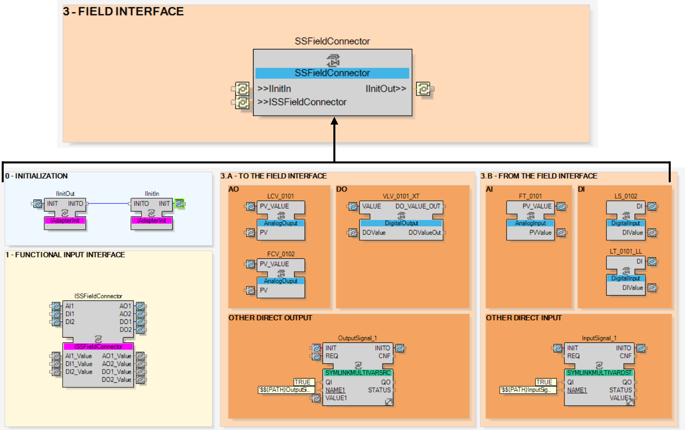

The field interface of a sub-system represents only the inputs and outputs directly managed by the sub-system by either:
DI, DO, AI or AO function block instances, or
Directly through symbolic links.
The inputs and outputs managed by the children sub-systems are located directly in the field interface of those sub-systems.
A field connection CAT offers only the following elements at its interfaces:
Input and output adapters for the initialization chain.
Input adapter, defined as a Plug in the CAT interface) to manage the bidirectional communication from the inputs and to the outputs.
